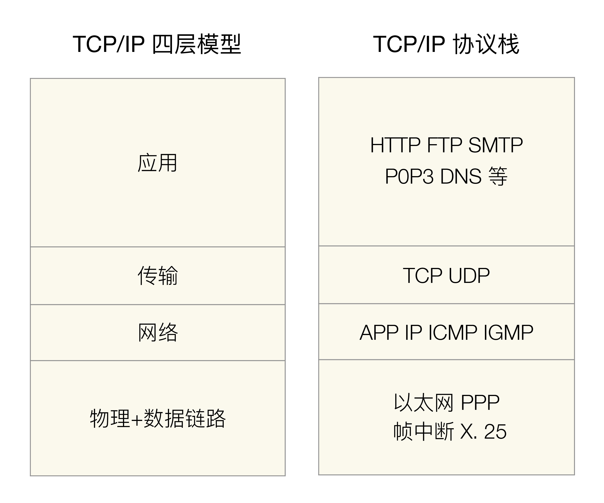

- 00 开篇词 照着做，你也能成为架构师！.md.html
- 01 架构到底是指什么？.md.html
- 02 架构设计的历史背景.md.html
- 03 架构设计的目的.md.html
- 04 复杂度来源：高性能.md.html
- 05 复杂度来源：高可用.md.html
- 06 复杂度来源：可扩展性.md.html
- 07 复杂度来源：低成本、安全、规模.md.html
- 08 架构设计三原则.md.html
- 09 架构设计原则案例.md.html
- 10 架构设计流程：识别复杂度.md.html
- 11 架构设计流程：设计备选方案.md.html
- 12 架构设计流程：评估和选择备选方案.md.html
- 13 架构设计流程：详细方案设计.md.html
- 14 高性能数据库集群：读写分离.md.html
- 15 高性能数据库集群：分库分表.md.html
- 16 高性能NoSQL.md.html
- 17 高性能缓存架构.md.html
- 18 单服务器高性能模式：PPC与TPC.md.html
- 19 单服务器高性能模式：Reactor与Proactor.md.html
- 20 高性能负载均衡：分类及架构.md.html
- 21 高性能负载均衡：算法.md.html
- 22 想成为架构师，你必须知道CAP理论.md.html
- 23 想成为架构师，你必须掌握的CAP细节.md.html
- 24 FMEA方法，排除架构可用性隐患的利器.md.html
- 25 高可用存储架构：双机架构.md.html
- 26 高可用存储架构：集群和分区.md.html
- 27 如何设计计算高可用架构？.md.html
- 28 业务高可用的保障：异地多活架构.md.html
- 29 异地多活设计4大技巧.md.html
- 30 异地多活设计4步走.md.html
- 31 如何应对接口级的故障？.md.html
- 32 可扩展架构的基本思想和模式.md.html
- 33 传统的可扩展架构模式：分层架构和SOA.md.html
- 34 深入理解微服务架构：银弹 or 焦油坑？.md.html
- 35 微服务架构最佳实践 - 方法篇.md.html
- 36 微服务架构最佳实践 - 基础设施篇.md.html
- 37 微内核架构详解.md.html
- 38 架构师应该如何判断技术演进的方向？.md.html
- 39 互联网技术演进的模式.md.html
- 40 互联网架构模板：存储层技术.md.html
- 41 互联网架构模板：开发层和服务层技术.md.html
- 42 互联网架构模板：网络层技术.md.html
- 43 互联网架构模板：用户层和业务层技术.md.html
- 44 互联网架构模板：平台技术.md.html
- 45 架构重构内功心法第一式：有的放矢.md.html
- 46 架构重构内功心法第二式：合纵连横.md.html
- 47 架构重构内功心法第三式：运筹帷幄.md.html
- 48 再谈开源项目：如何选择、使用以及二次开发？.md.html
- 49 谈谈App架构的演进.md.html
- 50 架构实战：架构设计文档模板.md.html
- 51 如何画出优秀的软件系统架构图？.md.html
- 加餐｜业务架构实战营开营了.md.html
- 加餐｜单服务器高性能模式性能对比.md.html
- 加餐｜扒一扒中台皇帝的外衣.md.html
- 如何高效地学习开源项目 华仔，放学别走！ 第3期.md.html
- 新书首发 《从零开始学架构》.md.html
- 架构专栏特别放送 华仔，放学别走！ 第2期.md.html
- 架构专栏特别放送 华仔，放学别走！第1期.md.html
- 架构师必读书单 华仔，放学别走！ 第5期.md.html
- 架构师成长之路 华仔，放学别走！ 第4期.md.html
- 结束语 坚持，成就你的技术梦想.md.html
- 捐赠
32 可扩展架构的基本思想和模式
软件系统与硬件和建筑系统最大的差异在于软件是可扩展的，一个硬件生产出来后就不会再进行改变、一个建筑完工后也不会再改变其整体结构。例如，一颗CPU生产出来后装到一台PC机上，不会再返回工厂进行加工以增加新的功能；金字塔矗立千年历经风吹雨打，但其现在的结构和当时建成完工时的结构并无两样。相比之下，软件系统就完全相反，如果一个软件系统开发出来后，再也没有任何更新和调整，反而说明了这套软件系统没有发展、没有生命力。真正有生命力的软件系统，都是在不断迭代和发展的，典型的如Windows操作系统，从Windows 3.0到Windows 95到Windows XP，直到现在的Windows 10，一直在跟着技术的发展而不断地发展。
今天我们进入架构可扩展模式的学习，这部分内容包括分层架构、SOA架构、微服务和微内核等，先来聊聊架构的可扩展模式。
软件系统的这种天生和内在的可扩展的特性，既是魅力所在，又是难点所在。魅力体现在我们可以通过修改和扩展，不断地让软件系统具备更多的功能和特性，满足新的需求或者顺应技术发展的趋势。而难点体现在如何以最小的代价去扩展系统，因为很多情况下牵一发动全身，扩展时可能出现到处都要改，到处都要推倒重来的情况。这样做的风险不言而喻：改动的地方越多，投入也越大，出错的可能性也越大。因此，如何避免扩展时改动范围太大，是软件架构可扩展性设计的主要思考点。
可扩展的基本思想
幸运的是，可扩展性架构的设计方法很多，但万变不离其宗，所有的可扩展性架构设计，背后的基本思想都可以总结为一个字：拆！
拆，就是将原本大一统的系统拆分成多个规模小的部分，扩展时只修改其中一部分即可，无须整个系统到处都改，通过这种方式来减少改动范围，降低改动风险。
说起来好像挺简单，毕竟“拆”我们见得太多了。一般情况下，我们要拆一个东西时，都是简单粗暴的。例如，用推土机拆房子、用剪刀拆快递包装、用手撕开包装袋等，反正拆完了这些东西就扔了。但面对软件系统，拆就没那么简单了，因为我们并不是要摧毁一个软件系统，而是要通过拆让软件系统变得更加优美（具备更好的可扩展性）。形象地说，软件系统中的“拆”是建设性的，因此难度要高得多。
按照不同的思路来拆分软件系统，就会得到不同的架构。常见的拆分思路有如下三种。
- 面向流程拆分：将整个业务流程拆分为几个阶段，每个阶段作为一部分。
- 面向服务拆分：将系统提供的服务拆分，每个服务作为一部分。
- 面向功能拆分：将系统提供的功能拆分，每个功能作为一部分。
理解这三种思路的关键就在于如何理解“流程”“服务”“功能”三者的联系和区别。从范围上来看，从大到小依次为：流程>服务>功能，单纯从概念解释可能难以理解，但实际上看几个案例就很清楚了。
我以TCP/IP协议栈为例，来说明“流程”“服务”“功能”的区别和联系。TCP/IP协议栈和模型图如下图所示。

- 流程
对应TCP/IP四层模型，因为TCP/IP网络通信流程是：应用层 → 传输层 → 网络层 → 物理+数据链路层，不管最上层的应用层是什么，这个流程都不会变。
- 服务
对应应用层的HTTP、FTP、SMTP等服务，HTTP提供Web服务，FTP提供文件服务，SMTP提供邮件服务，以此类推。
- 功能
每个服务都会提供相应的功能。例如，HTTP服务提供GET、POST功能，FTP提供上传下载功能，SMTP提供邮件发送和收取功能。
我再以一个简单的学生信息管理系统为例（几乎每个技术人员读书时都做过这样一个系统），拆分方式是：
1.面向流程拆分
展示层 → 业务层 → 数据层 → 存储层，各层含义是：
- 展示层：负责用户页面设计，不同业务有不同的页面。例如，登录页面、注册页面、信息管理页面、安全设置页面等。
- 业务层：负责具体业务逻辑的处理。例如，登录、注册、信息管理、修改密码等业务。
- 数据层：负责完成数据访问。例如，增删改查数据库中的数据、记录事件到日志文件等。
- 存储层：负责数据的存储。例如，关系型数据库MySQL、缓存系统Memcache等。
最终的架构如下：

2.面向服务拆分
将系统拆分为注册、登录、信息管理、安全设置等服务，最终架构示意图如下：

3.面向功能拆分
每个服务都可以拆分为更多细粒度的功能，例如：
- 注册服务：提供多种方式进行注册，包括手机号注册、身份证注册、学生邮箱注册三个功能。
- 登录服务：包括手机号登录、身份证登录、邮箱登录三个功能。
- 信息管理服务：包括基本信息管理、课程信息管理、成绩信息管理等功能。
- 安全设置服务：包括修改密码、安全手机、找回密码等功能。
最终架构图如下：

通过学生信息管理系统的案例可以发现，不同的拆分方式，架构图差异很大。但好像无论哪种方式，最终都是可以实现的。既然如此，我们何必费尽心机去选择呢，随便挑选一个不就可以了？
当然不能随便挑，否则架构设计就没有意义了，架构师也就要丢掉饭碗了。原因在于：不同的拆分方式，本质上决定了系统的扩展方式。
可扩展方式
当我们谈可扩展性时，很多同学都会有一个疑惑：就算是不拆分系统，只要在设计和写代码时做好了，同样不会出现到处改的问题啊？例如，在面向服务拆分的案例中，增加“学号注册”，就算是不拆分为服务，也可以控制修改的范围，那为何我们要大费周章地去拆分系统呢？
在一个理想的环境，你的团队都是高手，每个程序员都很厉害，对业务都很熟悉，新来的同事很快就知晓所有的细节……那确实不拆分也没有问题。但现实却是：团队有菜鸟程序员，到底是改A处实现功能还是改B处实现功能，完全取决于他觉得哪里容易改；有的程序员比较粗心；有的程序员某天精神状态不太好；新来的同事不知道历史上某行代码为何那么“恶心”，而轻易地将其改漂亮了一些……所有的这些问题都可能出现，这时候你就会发现，合理的拆分，能够强制保证即使程序员出错，出错的范围也不会太广，影响也不会太大。
下面是不同拆分方式应对扩展时的优势。
1.面向流程拆分
扩展时大部分情况只需要修改某一层，少部分情况可能修改关联的两层，不会出现所有层都同时要修改。例如学生信息管理系统，如果我们将存储层从MySQL扩展为同时支持MySQL和Oracle，那么只需要扩展存储层和数据层即可，展示层和业务层无须变动。
2.面向服务拆分
对某个服务扩展，或者要增加新的服务时，只需要扩展相关服务即可，无须修改所有的服务。同样以学生管理系统为例，如果我们需要在注册服务中增加一种“学号注册”功能，则只需要修改“注册服务”和“登录服务”即可，“信息管理服务”和“安全设置”服务无须修改。
3.面向功能拆分
对某个功能扩展，或者要增加新的功能时，只需要扩展相关功能即可，无须修改所有的服务。同样以学生管理系统为例，如果我们增加“学号注册”功能，则只需要在系统中增加一个新的功能模块，同时修改“登录功能”模块即可，其他功能都不受影响。
不同的拆分方式，将得到不同的系统架构，典型的可扩展系统架构有：
- 面向流程拆分：分层架构。
- 面向服务拆分：SOA、微服务。
- 面向功能拆分：微内核架构。
当然，这几个系统架构并不是非此即彼的，而是可以在系统架构设计中进行组合使用的。以学生管理系统为例，我们最终可以这样设计架构：
- 整体系统采用面向服务拆分中的“微服务”架构，拆分为“注册服务”“登录服务”“信息管理服务”“安全服务”，每个服务是一个独立运行的子系统。
- 其中的“注册服务”子系统本身又是采用面向流程拆分的分层架构。
- “登录服务”子系统采用的是面向功能拆分的“微内核”架构。
专栏后面的内容我将详细阐述每种可扩展架构。
小结
今天我为你讲了可扩展架构的一些基本思想和方式，希望对你有所帮助。
这就是今天的全部内容，留一道思考题给你吧，规则引擎是常用的一种支持可扩展的方式，按照今天的分析，它属于哪一类？
© 2019 - 2023 Liangliang Lee. Powered by gin and hexo-theme-book.